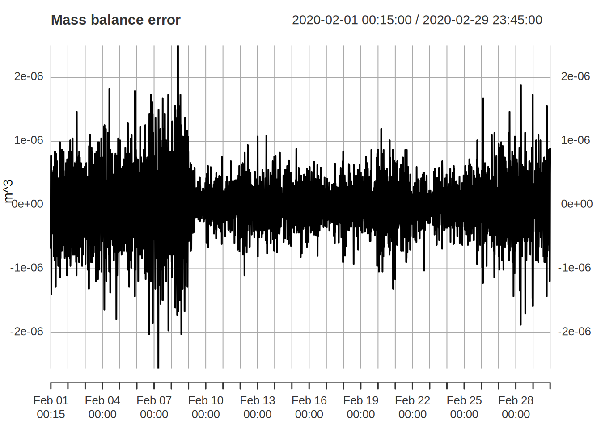
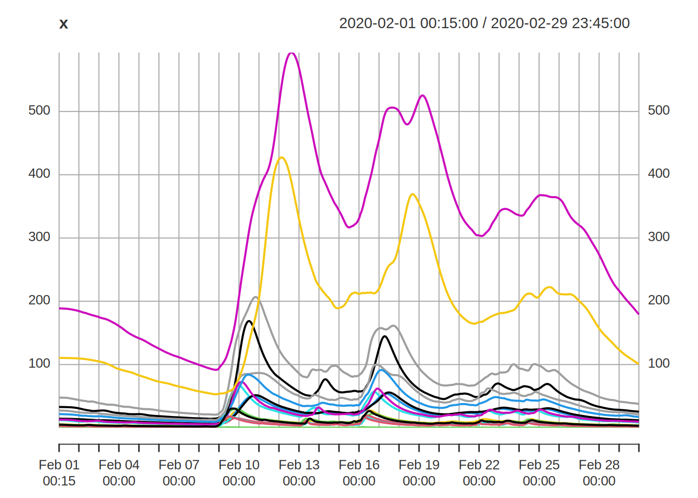
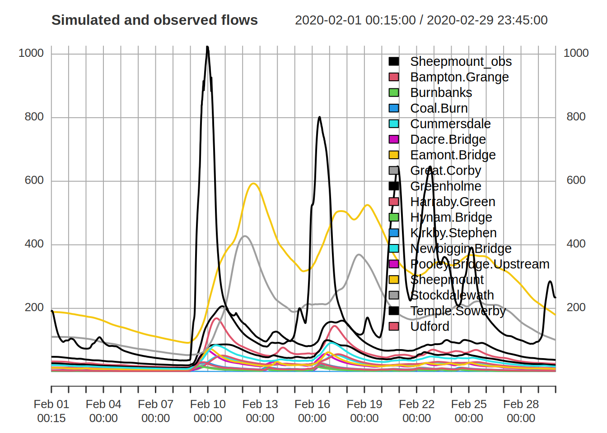
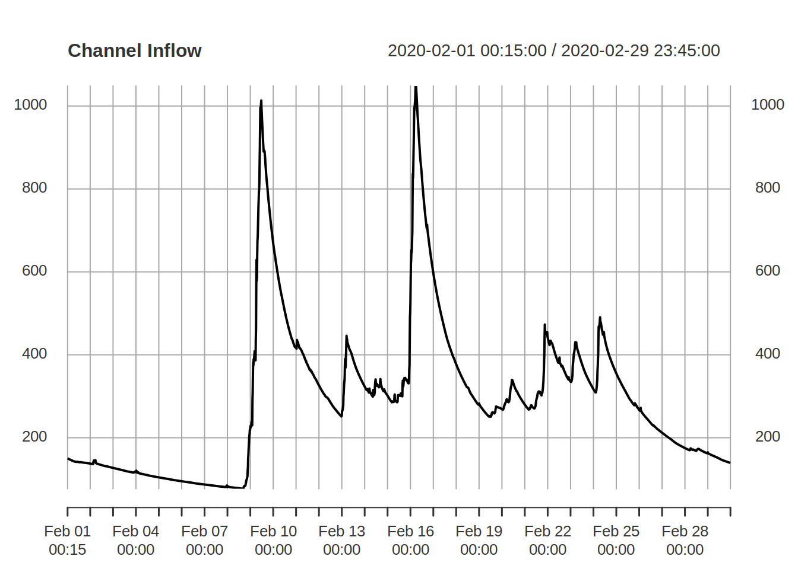
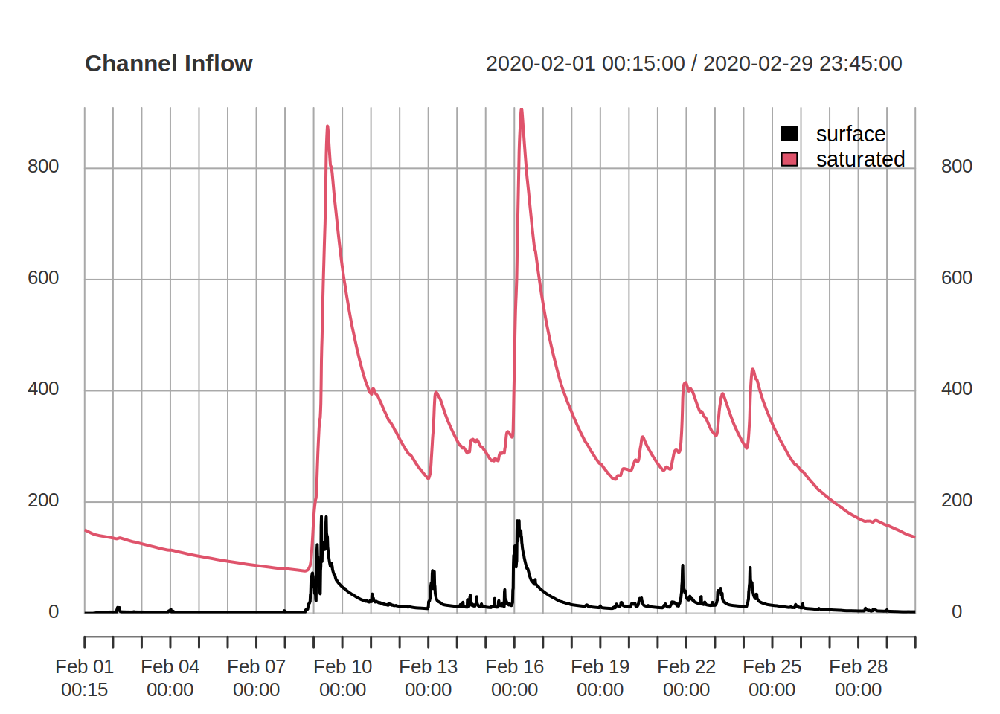
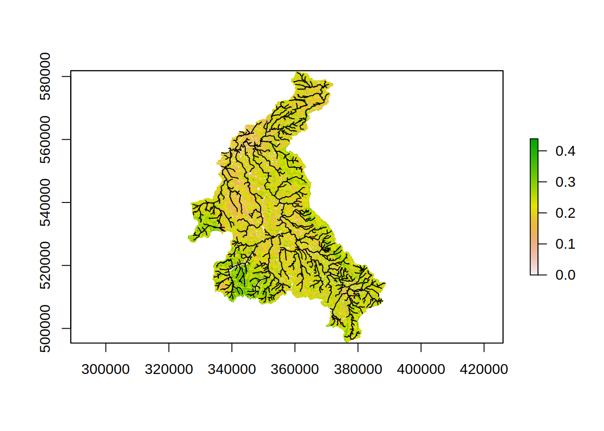
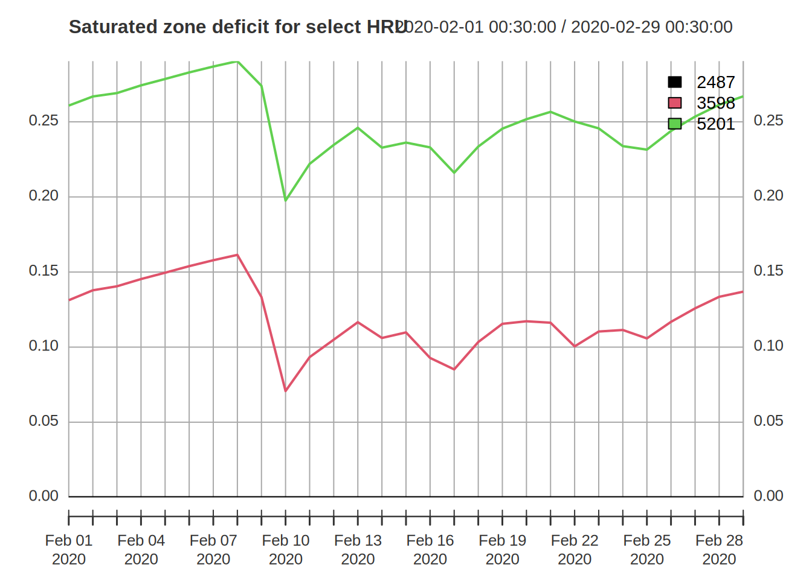
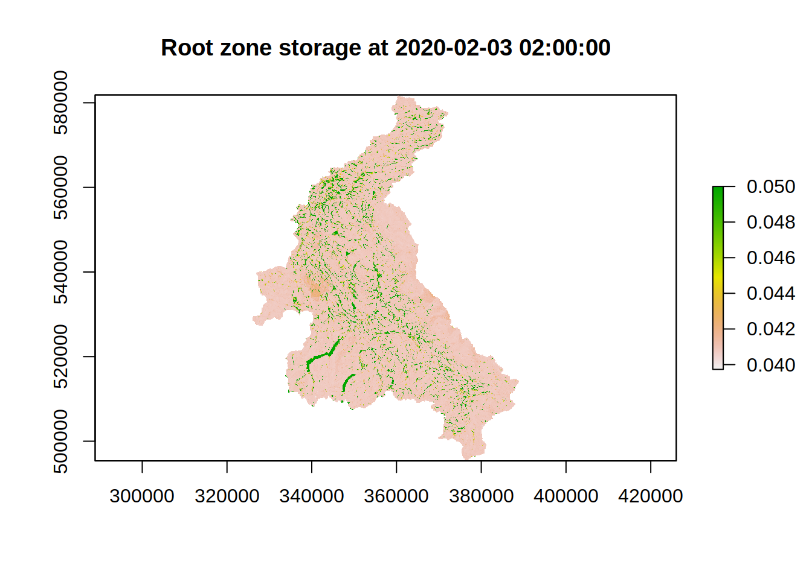

To simulate a Dynamic TOPMODEL of the Eden catchment, visualise the output and show how the parameters may be altered.
No further packages are required beyond those used in processing the GIS processing and observed data.
The minimum data need to perform a simulation with dynatop is a model, such as that output by dynatopGIS in the previous section and observed data in the format introduced earlier.
Load the previously created data
mdl <- readRDS(file.path(".","processed","atb_band_model.rds"))
obs <- readRDS(file.path(".","processed","obs.rds"))Attach the dynatop package so it is available in the R session then initialise a dynatop object by loading the model
library(dynatop)
ctch_mdl <- dynatop$new(mdl)This step performs some basis checks on the model for consistency. The data can then be added; again simple checks are performed.
ctch_mdl$add_data(obs)There are two types of HRU; hill-slope and channel. These can be run individually with the sim_hillslope and sim_channel methods or sequentially with the sim method. The individual methods check that suitable input data is available, but not how it was generated.
The initial states of the simulations can be specified in the model object. If, as in the case of this example, the states are not specified then any attempt to perform a simulation will fail.
## expect a failure
ctch_mdl$sim()
#> Error in self$sim_hillslope(keep_states, sub_step): Model states are either not initialised or have non-finite valuesThe states need to be initialised using the initialise method. This presumes:
The uniform maximum recharge rate is input to the method call. A simple way of getting an initial estimate of this is to divide the observed discharge at the outlet of the catchment for the first time step by the hill-slope surface area. This works best if the first time step has no rainfall and is close to base-flow.
## determining the initial recharge rate
q0 <- obs$Sheepmount_obs[1] / sum(mdl$hillslope$area)In the following we initialise the states and then perform the simulation, using the chaining of commands.
ctch_mdl$initialise(q0)$sim() #plot_state("s_sz") -->
#> Warning in private$sim_hs(keep_states, sub_step[1]): Courant number for surface zone is over 0.7
#> Suggest maximum sub step is: 620.43seconds
#> Warning in private$sim_hs(keep_states, sub_step[1]): Courant number for saturated zone is over 0.7
#> Suggest maximum sub step is: 42.29secondsIt is possible to output the mass balance for each time step of the simulation using the get_mass_errors method. The returns an xts object giving the volumes in the hill-slope states at the start and end of the time step along with the other fluxes as volumes. This can easily be used to plot the errors as shown below.
mb <- ctch_mdl$get_mass_errors()
head(mb) ## note the negative signs existing or outward flow to allow mass balance to be computed by summation
#> initial_state e_t p channel_inflow final_state
#> 2020-02-01 00:15:00 -364506228 0 633.6767 -134908.2 364640502
#> 2020-02-01 00:30:00 -364640502 0 633.6767 -134734.1 364774603
#> 2020-02-01 00:45:00 -364774603 0 6368.0334 -134535.6 364902770
#> 2020-02-01 01:00:00 -364902770 0 6368.0334 -134311.5 365030714
#> 2020-02-01 01:15:00 -365030714 0 2144.2530 -134084.4 365162654
#> 2020-02-01 01:30:00 -365162654 0 2144.2530 -133845.3 365294355
mb$err <- rowSums(mb) ## the total error in m^3
plot( mb$err , main="Mass balance error",ylab="m^3")
After a simulation it is possible to get or plot output. Three types of output are available:
All have methods for plotting the data or returning in as a variable as shown in the following
## For simulated flows at the gauge sites
sim_gauge <- ctch_mdl$get_gauge_flow() ## extract the flow as an xts object
head(sim_gauge)
#> Bampton Grange Burnbanks Coal Burn Cummersdale Dacre Bridge
#> 2020-02-01 00:15:00 4.777853 2.114709 0.1139893 16.82490 2.442368
#> 2020-02-01 00:30:00 4.777787 2.114664 0.1139476 16.82484 2.442298
#> 2020-02-01 00:45:00 4.777576 2.114568 0.1137891 16.82463 2.442074
#> 2020-02-01 01:00:00 4.777203 2.114446 0.1136047 16.82431 2.441677
#> 2020-02-01 01:15:00 4.776655 2.114227 0.1134088 16.82387 2.441097
#> 2020-02-01 01:30:00 4.775886 2.113885 0.1132071 16.82310 2.440325
#> Eamont Bridge Great Corby Greenholme Harraby Green
#> 2020-02-01 00:15:00 11.38492 93.09310 23.31806 8.505888
#> 2020-02-01 00:30:00 11.38489 93.09305 23.31797 8.505848
#> 2020-02-01 00:45:00 11.38478 93.09290 23.31770 8.505725
#> 2020-02-01 01:00:00 11.38459 93.09264 23.31725 8.505508
#> 2020-02-01 01:15:00 11.38427 93.09225 23.31657 8.505195
#> 2020-02-01 01:30:00 11.38371 93.09165 23.31564 8.504768
#> Hynam Bridge Kirkby Stephen Newbiggin Bridge
#> 2020-02-01 00:15:00 3.338467 5.267839 8.082696
#> 2020-02-01 00:30:00 3.338400 5.267813 8.082629
#> 2020-02-01 00:45:00 3.338183 5.267683 8.082415
#> 2020-02-01 01:00:00 3.337790 5.267375 8.082040
#> 2020-02-01 01:15:00 3.337117 5.266874 8.081495
#> 2020-02-01 01:30:00 3.336010 5.266035 8.080777
#> Pooley Bridge Upstream Sheepmount Stockdalewath
#> 2020-02-01 00:15:00 10.45879 149.3582 3.694243
#> 2020-02-01 00:30:00 10.45871 149.3581 3.694188
#> 2020-02-01 00:45:00 10.45844 149.3579 3.694011
#> 2020-02-01 01:00:00 10.45800 149.3575 3.693645
#> 2020-02-01 01:15:00 10.45733 149.3569 3.692948
#> 2020-02-01 01:30:00 10.45628 149.3561 3.691913
#> Temple Sowerby Udford
#> 2020-02-01 00:15:00 42.38863 27.67956
#> 2020-02-01 00:30:00 42.38858 27.67951
#> 2020-02-01 00:45:00 42.38844 27.67935
#> 2020-02-01 01:00:00 42.38819 27.67906
#> 2020-02-01 01:15:00 42.38780 27.67864
#> 2020-02-01 01:30:00 42.38703 27.67809
## Plot the simulated flows at the gauges
ctch_mdl$plot_gauge_flow()
The observed gauge data is readily added and plotted
plot( merge(obs$Sheepmount_obs,sim_gauge),main="Simulated and observed flows",
legend.loc='topright') ### Channel Inflow
## For inflows to the Channel HRU from the Hill-slope HRUs
channel_inflow <- ctch_mdl$get_channel_inflow() ## extract the flow as an xts object
## there is one column for each Channel HRU. The column names are the Channel HRU IDs (as strings)
## For example to see the start of the inflows to the 23,560 and 1602 channel HRUS
head(channel_inflow[,c("23","560","1602")])
#> 23 560 1602
#> 2020-02-01 00:15:00 0.01813289 0.01100705 0.01637712
#> 2020-02-01 00:30:00 0.01811032 0.01099575 0.01635928
#> 2020-02-01 00:45:00 0.01808301 0.01098145 0.01633697
#> 2020-02-01 01:00:00 0.01805300 0.01096517 0.01631181
#> 2020-02-01 01:15:00 0.01802148 0.01094759 0.01628485
#> 2020-02-01 01:30:00 0.01798913 0.01092917 0.01625677
## Plot the total inflow to all channel HRUs from the Hill-slopes
ctch_mdl$plot_channel_inflow(total=TRUE)
## setting total to FALSE plots all the channel HRUs inflows individuallyWhile the total channel HRU inflow is useful it may also be desirable to see if the flux is coming from the surface or saturated zones.
## To get the inflows to the Channel HRU from the Hill-slope HRUs separated by surface and saturated zone contributions
sep_channel_inflow <- ctch_mdl$get_channel_inflow(separate=TRUE)
## for example the start of the inflow to the Channel HRUs with ID 23, 560 and 1602
head(sep_channel_inflow$saturated[,c("23","560","1602")]) ## inflow from the saturated zone
#> 23 560 1602
#> 2020-02-01 00:15:00 0.01813289 0.01100705 0.01637712
#> 2020-02-01 00:30:00 0.01811032 0.01099575 0.01635928
#> 2020-02-01 00:45:00 0.01808301 0.01098145 0.01633697
#> 2020-02-01 01:00:00 0.01805300 0.01096517 0.01631181
#> 2020-02-01 01:15:00 0.01802148 0.01094759 0.01628485
#> 2020-02-01 01:30:00 0.01798913 0.01092917 0.01625677
head(sep_channel_inflow$surface[,c("23","560","1602")]) ## inflow from the surface zone
#> 23 560 1602
#> 2020-02-01 00:15:00 0.000000e+00 0.000000e+00 0.000000e+00
#> 2020-02-01 00:30:00 0.000000e+00 4.561947e-92 2.652405e-91
#> 2020-02-01 00:45:00 5.649183e-41 3.413654e-41 1.984765e-40
#> 2020-02-01 01:00:00 2.850317e-41 -1.946306e-42 -1.131620e-41
#> 2020-02-01 01:15:00 1.438138e-41 -9.838281e-43 -5.720167e-42
#> 2020-02-01 01:30:00 -4.446784e-40 1.657096e-41 9.634679e-41
## For an overall picture
ctch_mdl$plot_channel_inflow(total=TRUE,separate=TRUE)
The current states of the model can be extracted and plotted.
## extract the current states as a data.frame
current_state <- ctch_mdl$get_states()
## columns correspond to the Hill-slope HRU ID, and the storage's in each of the four zones
head(current_state)
#> id s_sf s_rz s_uz s_sz
#> 3512 5209 0 0.04929707 4.614257e-18 0.2694629
#> 3511 5208 0 0.04929707 1.574083e-17 0.2865658
#> 3510 5207 0 0.04929707 1.320038e-17 0.2840076
#> 3509 5206 0 0.04929707 9.371134e-19 0.2495939
#> 3508 5205 0 0.04929707 8.403121e-18 0.2776067
#> 3507 5204 0 0.04929707 6.127914e-18 0.2732682
## a single state can be plotted at one time
ctch_mdl$plot_state("s_sz")
#> Warning in showSRID(SRS_string, format = "PROJ", multiline = "NO", prefer_proj =
#> prefer_proj): Discarded datum OSGB 1936 in Proj4 definition
#> Warning in OGRSpatialRef(dsn, layer, morphFromESRI = morphFromESRI, dumpSRS =
#> dumpSRS, : Discarded datum OSGB_1936 in Proj4 definition: +proj=tmerc +lat_0=49
#> +lon_0=-2 +k=0.9996012717 +x_0=400000 +y_0=-100000 +ellps=airy +units=m +no_defs
The parameters are stored in the model as which is made up of standard R data.frame’s. Using the properties within the data frame simple parameter changes are straightforward
## Some simple manipulations of the Hill-slope HRU parameters
## set all Hill-slope HRU exponential decay (m) parameters to 0.03
mdl$hillslope$m <- 0.03
## set all Hill-slope HRU maximum depth parameters (D) to 10m
## where the average topographic index (atb_bar) is > 20
mdl$hillslope$D[ mdl$hillslope$atb_bar > 20 ] <- 10To change a parameter for all the HRUs with a specific value of one of the classification variables requires more work
## A more complex change - set the surface velocity (c_sf) for all HRUs in band 1 to 1 m/s
## First read in the band and HRU id maps
band <- raster(file.path(".","dynaGIS","band.tif"))
#> Warning in showSRID(SRS_string, format = "PROJ", multiline = "NO", prefer_proj =
#> prefer_proj): Discarded datum OSGB 1936 in Proj4 definition
hru_id<- raster(file.path(".","dynaGIS","atb_band_model.tif"))
#> Warning in showSRID(SRS_string, format = "PROJ", multiline = "NO", prefer_proj =
#> prefer_proj): Discarded datum OSGB 1936 in Proj4 definition
## find the unique HRU id values which have a band value of 1
u_hru_id <- unique(hru_id[band==1]) ## find unique hru id value
## in case we want to use the information again lets add an extra column to the model hillslope table
mdl$hillslope$in_band_1 <- FALSE ## be careful with the name in case it classes with an existing property, parameter or state
mdl$hillslope$in_band_1[mdl$hillslope$id %in% u_hru_id] <- TRUE
## Now change the parameter
mdl$hillslope$c_sf[mdl$hillslope$in_band_1] <- 1
## to see the changes
head(mdl$hillslope,20)
#> id area atb_bar s_bar min_dst width class r_sfmax s_rzmax
#> 1 1698 8863.258 10.35141 0.4074999988 1 100 1 Inf 0.05
#> 2 1699 278400.036 10.93252 0.3466079336 1 3000 2 Inf 0.05
#> 3 1700 4124574.688 11.69326 0.2037255562 1 44800 3 Inf 0.05
#> 4 1701 23625912.272 12.38296 0.1335983214 1 256200 5 Inf 0.05
#> 5 1702 44268657.183 13.09977 0.0926297277 1 481200 8 Inf 0.05
#> 6 1703 42992088.067 13.83756 0.0658113717 1 469500 12 Inf 0.05
#> 7 1704 28275391.038 14.60202 0.0457288341 1 308500 17 Inf 0.05
#> 8 1705 16615345.565 15.37048 0.0356075060 1 181400 23 Inf 0.05
#> 9 1706 8544736.238 16.13619 0.0272253691 1 92900 30 Inf 0.05
#> 10 1707 4459691.218 16.91308 0.0224561775 1 48300 38 Inf 0.05
#> 11 1708 2196479.006 17.66492 0.0191034448 1 23700 48 Inf 0.05
#> 12 1709 1924467.168 18.40061 0.0073224624 1 20800 59 Inf 0.05
#> 13 1710 797184.921 19.27243 0.0036325871 1 8600 71 Inf 0.05
#> 14 1711 740554.090 20.11988 0.0008987868 1 8000 84 Inf 0.05
#> 15 1712 1108167.051 20.82740 0.0001479476 1 12100 97 Inf 0.05
#> 16 1713 398485.605 21.53258 0.0001000000 1 4300 112 Inf 0.05
#> 17 1714 9895.651 22.14952 0.0001000000 1 100 128 Inf 0.05
#> 18 1715 20000.000 11.01850 0.2970501706 2 200 4 Inf 0.05
#> 19 1716 770000.000 11.73360 0.1571377781 2 7700 6 Inf 0.05
#> 20 1717 3880000.000 12.38780 0.1176536202 2 38800 9 Inf 0.05
#> s_rz0 ln_t0 m D t_d c_sf in_band_1
#> 1 0.75 -2 0.03 5 7200 1.0 TRUE
#> 2 0.75 -2 0.03 5 7200 1.0 TRUE
#> 3 0.75 -2 0.03 5 7200 1.0 TRUE
#> 4 0.75 -2 0.03 5 7200 1.0 TRUE
#> 5 0.75 -2 0.03 5 7200 1.0 TRUE
#> 6 0.75 -2 0.03 5 7200 1.0 TRUE
#> 7 0.75 -2 0.03 5 7200 1.0 TRUE
#> 8 0.75 -2 0.03 5 7200 1.0 TRUE
#> 9 0.75 -2 0.03 5 7200 1.0 TRUE
#> 10 0.75 -2 0.03 5 7200 1.0 TRUE
#> 11 0.75 -2 0.03 5 7200 1.0 TRUE
#> 12 0.75 -2 0.03 5 7200 1.0 TRUE
#> 13 0.75 -2 0.03 5 7200 1.0 TRUE
#> 14 0.75 -2 0.03 10 7200 1.0 TRUE
#> 15 0.75 -2 0.03 10 7200 1.0 TRUE
#> 16 0.75 -2 0.03 10 7200 1.0 TRUE
#> 17 0.75 -2 0.03 10 7200 1.0 TRUE
#> 18 0.75 -2 0.03 5 7200 0.1 FALSE
#> 19 0.75 -2 0.03 5 7200 0.1 FALSE
#> 20 0.75 -2 0.03 5 7200 0.1 FALSEUnless requested dynatop keeps only the current state during a simulation. To request that states are other time steps are kept a vector of times must be passed in the call to the sim or sim_hillslope method
## Let us repeat the same simulation
## keeping the states for every other time step
keep_times <- index(obs)[seq(2,nrow(obs),by=2)] ## an vector of time steps
ctch_mdl$initialise(q0)$sim(keep_states=keep_times) ## passing the vector of time steps to the call
#> Warning in private$sim_hs(keep_states, sub_step[1]): Courant number for surface zone is over 0.7
#> Suggest maximum sub step is: 620.43seconds
#> Warning in private$sim_hs(keep_states, sub_step[1]): Courant number for saturated zone is over 0.7
#> Suggest maximum sub step is: 42.29secondsThe record of the states can know be extracted. While there is an entry for every time step only those request will be populated
## extract the record of the states at each time step
state_rec <- ctch_mdl$get_states(record=TRUE) ## returns the whole record of states
head(names(state_rec)) ## the elements in state_rec are named after the time
#> [1] "2020-02-01 00:15:00" "2020-02-01 00:30:00" "2020-02-01 00:45:00"
#> [4] "2020-02-01 01:00:00" "2020-02-01 01:15:00" "2020-02-01 01:30:00"
head(state_rec[[format(keep_times[1])]]) ## those in keep_times are populated
#> id s_sf s_rz s_uz s_sz
#> 1 5209 0 0.0375 7.139825e-05 0.2596997
#> 2 5208 0 0.0375 7.926350e-05 0.2768253
#> 3 5207 0 0.0375 7.807739e-05 0.2742681
#> 4 5206 0 0.0375 6.251559e-05 0.2398172
#> 5 5205 0 0.0375 7.512329e-05 0.2678611
#> 6 5204 0 0.0375 7.313215e-05 0.2635105
head(state_rec[[format(index(obs)[1])]]) ## those not in keep_times are empty
#> data frame with 0 columns and 0 rowsThe visualisation of the state record is possible either as a time series
## Create a time series plot of the saturated zone deficit
s_sz_rec <- lapply(state_rec,function(x){x$s_sz}) ## extra the saturated deficit from each time step
s_sz_rec <- do.call(rbind,s_sz_rec) ## convert them into a matrix
head(rownames(s_sz_rec)) ## the row names are the the times carried over from the names in state_rec
#> [1] "2020-02-01 00:30:00" "2020-02-01 01:00:00" "2020-02-01 01:30:00"
#> [4] "2020-02-01 02:00:00" "2020-02-01 02:30:00" "2020-02-01 03:00:00"
s_sz_rec <- as.xts(s_sz_rec) ## convert to and xts object using the rownames as times
names(s_sz_rec) <- paste(state_rec[[format(keep_times[1])]]$id) ## give column names as the HRU id
## for a the Hill-slope HRUs with IDs 2487, 3598 and 5201 the start of the time series are
head(s_sz_rec[,c("2487","3598","5201")])
#> 2487 3598 5201
#> 2020-02-01 00:30:00 0.2304547 0.2044729 0.2573946
#> 2020-02-01 01:00:00 0.2305711 0.2045939 0.2575064
#> 2020-02-01 01:30:00 0.2307067 0.2047324 0.2576388
#> 2020-02-01 02:00:00 0.2308499 0.2048773 0.2577802
#> 2020-02-01 02:30:00 0.2309962 0.2050242 0.2579254
#> 2020-02-01 03:00:00 0.2311433 0.2051717 0.2580720
## and a plot can be generated
plot(s_sz_rec[,c("2487","3598","5201")],main="Saturated zone deficit for select HRU",legend.loc="topright")
or as a map
## Create a map of the root zone storage at 2020-02-03 02:00:00
s_rz_val <- state_rec[["2020-02-03 02:00:00"]][,c("id","s_rz")] ## extract the id and rz storage
## create a map of values by substituting s_rz for the id in the hru_id map
s_rz_map<- raster::subs(hru_id, s_rz_val) ## substitute values into the map of HRU id numbers
## and plot
plot(s_rz_map,main="Root zone storage at 2020-02-03 02:00:00")
Hot starting; that is starting a simulation with the final states of a previous simulation can be achieved by simply not re-initialising the dynatop object before the next call to sim
## initialise and simulate the model
ctch_mdl$initialise(q0)$sim()
#> Warning in private$sim_hs(keep_states, sub_step[1]): Courant number for surface zone is over 0.7
#> Suggest maximum sub step is: 620.43seconds
#> Warning in private$sim_hs(keep_states, sub_step[1]): Courant number for saturated zone is over 0.7
#> Suggest maximum sub step is: 42.29seconds
head(ctch_mdl$get_states()) ## state values after the initial run
#> id s_sf s_rz s_uz s_sz
#> 3512 5209 0 0.04929707 4.614257e-18 0.2694629
#> 3511 5208 0 0.04929707 1.574083e-17 0.2865658
#> 3510 5207 0 0.04929707 1.320038e-17 0.2840076
#> 3509 5206 0 0.04929707 9.371134e-19 0.2495939
#> 3508 5205 0 0.04929707 8.403121e-18 0.2776067
#> 3507 5204 0 0.04929707 6.127914e-18 0.2732682
## run again without initialising
## This will use the final states of the last simulation as the starting states
ctch_mdl$sim()
#> Warning in private$sim_hs(keep_states, sub_step[1]): Courant number for surface zone is over 0.7
#> Suggest maximum sub step is: 620.43seconds
#> Warning in private$sim_hs(keep_states, sub_step[1]): Courant number for saturated zone is over 0.7
#> Suggest maximum sub step is: 42.29seconds
head(ctch_mdl$get_states()) ## different state values after the second run
#> id s_sf s_rz s_uz s_sz
#> 3512 5209 0 0.04929707 4.613086e-18 0.2694597
#> 3511 5208 0 0.04929707 1.573718e-17 0.2865625
#> 3510 5207 0 0.04929707 1.319727e-17 0.2840044
#> 3509 5206 0 0.04929707 9.368452e-19 0.2495907
#> 3508 5205 0 0.04929707 8.401070e-18 0.2776035
#> 3507 5204 0 0.04929707 6.126389e-18 0.2732650If you want to save the model and current states at the end of a simulation do not save the dynatop object. Instead extract and save he model including the current states and save that.
new_mdl <- ctch_mdl$get_model() ## get the model structure from the dynatop object
head(new_mdl$hillslope) ## as the original model but will final states included
#> id area atb_bar s_bar min_dst width class r_sfmax s_rzmax s_rz0
#> 3512 5209 10000 12.41351 0.04063333 338 100 3512 Inf 0.05 0.75
#> 3511 5208 10000 11.99229 0.06247205 337 100 3511 Inf 0.05 0.75
#> 3510 5207 10000 12.05755 0.06632578 336 100 3510 Inf 0.05 0.75
#> 3509 5206 10000 12.90779 0.02587451 335 100 3509 Inf 0.05 0.75
#> 3508 5205 10000 12.21474 0.05881537 335 100 3508 Inf 0.05 0.75
#> 3507 5204 30000 12.32571 0.04691417 334 300 3507 Inf 0.05 0.75
#> ln_t0 m D t_d c_sf s_sf s_rz s_uz s_sz
#> 3512 -2 0.04 5 7200 0.1 0 0.04929707 4.613086e-18 0.2694597
#> 3511 -2 0.04 5 7200 0.1 0 0.04929707 1.573718e-17 0.2865625
#> 3510 -2 0.04 5 7200 0.1 0 0.04929707 1.319727e-17 0.2840044
#> 3509 -2 0.04 5 7200 0.1 0 0.04929707 9.368452e-19 0.2495907
#> 3508 -2 0.04 5 7200 0.1 0 0.04929707 8.401070e-18 0.2776035
#> 3507 -2 0.04 5 7200 0.1 0 0.04929707 6.126389e-18 0.2732650